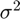
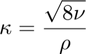
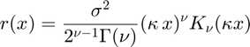

function [C,nu,kappa,sigma2,tau,Cov,Realisation,coords]=Matern(sigma2,alpha,rho,r,DoPlots,CreateRealisations)
Remark: Noticed in July 2026, that I had done this for  , which is OK, but not the most general expression Now I've included arbitrary
, which is OK, but not the most general expression Now I've included arbitrary  . I also clarified which parameters are considered independent (sigma2,alpha,rho). Also, the realizations are now in the plane, i.e. 2D, which gives a better feeling for how they look. Previously I only did this as a function of the distance, r.
. I also clarified which parameters are considered independent (sigma2,alpha,rho). Also, the realizations are now in the plane, i.e. 2D, which gives a better feeling for how they look. Previously I only did this as a function of the distance, r.
The Matern covariance function does not have a finite non-zero limit for  , and since
, and since  one must have
one must have  . Thus, for
. Thus, for  . Setting
. Setting  for gives
for gives  so this is then right at the limit.
so this is then right at the limit.
Mat\'ern Covariance
If we solve the equation:


with  uncorrelated Gaussian white noise. Then the resulting covariance is
uncorrelated Gaussian white noise. Then the resulting covariance is

where
 as the covariance is isotropic.
as the covariance is isotropic.
is not a function, but a generalized field defined by its action on test functions,
![$$E \left[\langle\mathcal{W},\phi_i\rangle\langle\mathcal{W},\phi_j\rangle\right] = (\phi_i,\phi_j)_{L^2} = M_{ij}$$](Matern_eq05860272048995275223.png)
Here we have

where  is the dimension, i.e in the xy plane, and the marginal variance is
is the dimension, i.e in the xy plane, and the marginal variance is

The correlation function  is simply the covariance normalized to give
is simply the covariance normalized to give

and is

Selecting hyper-parameters
We have several parameters that need to be selected. Of those is not really a free parameter but given by the physical dimension of the problem.
I can select  ,
,  and with and then set
and with and then set
and
This makes sense if I'm thinking about the parameters of the differential operator as independent.
Alternatively, I can select

and with , but this is not enough and I will additionally need to fix . This is often done by selecting the distance over which the correlation drops to 0.1 which turns out to be related to and  , so this is really just another way of selecting . This gives (approximately)
, so this is really just another way of selecting . This gives (approximately)

where  in this expression is the distance at which the correlation drops to 0.1 (although this is not exact)
in this expression is the distance at which the correlation drops to 0.1 (although this is not exact)
This is arguably the most physical way of thinking about this. I select which controls the smoothness. This gives me since is not really a free parameter. Then fix a correlation length which gives me from the above equation. I now also need to select , which relates to the uncertainty in the magnitude of the prior. I can then calculate from the expression for .
Here , and are considered free parameters and I set:

 discretized
discretized
[r,nu,kappa,sigma2,Cov,Realisation]=Matern(alpha,rho,d,x,sigma2,DoPlots)
Calculates the Matern covariance defined as

Inputs:
sigma2 : marginal variance, or prior uncertainty in the magnitude, that is C(r=0) = sigma2
alpha : alpha/2 is the exponent in the fractional Helmholtz equation, this controls the smoothness
mostly alpha makes the covariance flatter around h=0.
rho : distance where correlation falls to 0.1
r : distance between (x,y) points, i.e.\ the argument of the isotropic covariance function
DoPlots : plots of realizations if set to true (optional input)
Outputs:[C,nu,kappa,sigma2,tau,Cov,Realisation,coords
C : the covariance
nu : nu=alpha-d/2;
kappa : the wave-number in the Helmholtz equation
tau : the second parameter in the Helmholtz equation.
Cov : covariance matrix with the marginal covariance
Realisation : One realization of a Matern process.
coords : x,y coordinates of the points used to create the realization
The most relevant paper is:
Lindgren, F., Rue, H., & Lindström, J. (2011).
Example:
sigma2=1; alpha=2 ;rho=1 ; h=linspace(0,4,100) ; DoPlots=true ; [C,nu,kappa,sigma2,tau,Cov,Realisation]=Matern(sigma2,alpha,rho,h,DoPlots) ;
See also:
[rhoMatern,sigmaMatern,nuMatern]=Matern_alpha_kappa_tau(alphaMatern,kappaMatern,tauMatern) ; [alphaMatern,tauMatern,kappaMatern,sigma2Matern,nuMatern,rhoMatern]=Tikhonov2MaternParameters(ga,gs,Area)
, and are considered free parameters and I set:
d = 2; % physical dimension nu=alpha-d/2; % ie nu=1 for alpha=2 and dimension=2 %alpha = nu + d/2; kappa=sqrt(8*nu)/rho; % this gives a correlation of about 0.1 at the distance rho tau2 = gamma(nu) / (gamma(alpha) * (4*pi)^(d/2) * kappa^(2*nu) * sigma2); tau = sqrt(tau2); % some other sources appear to use a different definition of rho % for example rho in https://en.wikipedia.org/wiki/Mat%C3%A9rn_covariance_function % appear to be 1/2 of the rho I use here % My notation is based on: % Lindgren, F., Rue, H., & Lindström, J. (2011). % An explicit link between Gaussian fields and Gaussian Markov random fields: the stochastic partial differential equation approach. Journal of the Royal Statistical Society: Series B (Statistical Methodology), 73(4), 423–498. https://doi.org/10.1111/j.1467-9868.2011.00777.x % I should have C(0)=sigma2, but matlab gives: besselk(nu,0)=inf which whereas we here have the limit if 0*Inf which should give sigma2 C = zeros(size(r)); idx = (r > 0); C(idx) = sigma2 / (2^(nu-1) * gamma(nu)) * (kappa*r(idx)).^nu .* besselk(nu, kappa*r(idx)); C(~idx) = sigma2; % the expression above for r fails for x=0, although the limit x^nu beselk(nu,x) for x to 0 is well defined, in fact % % lim x to 0 of x^nu besselk(nu,x) = 1 %
if DoPlots FindOrCreateFigure("Matern covariance") hold on plot(r,C) xlabel("$r=\sqrt{(x-x_0)^2+(y-y_0)^2}$, distance between points in $(x,y)$ plane",Interpreter="latex") ylabel("$C(r)$, covariance",Interpreter="latex") title(sprintf("Mat\\'ern field realisation: $\\sigma^2=%g, \\alpha=%g, \\rho=%g$",sigma2,alpha,rho),Interpreter="latex"); subtitle(sprintf("$d=%g, \\nu=%g, \\kappa=%g, \\tau=%g$",d,nu,kappa,tau),Interpreter="latex"); end if CreateRealisations [X,Y] = meshgrid(r, r) ; coords = [X(:), Y(:)]; n = size(coords,1); % Pairwise distances H = squareform(pdist(coords)); % this is potentially large, it is numel(r)*numel(r) \times numel(r) numel(r) % Matérn covariance matrix (with h=0 handled separately) Cov = zeros(n,n); idx = H > 0; Cov(idx) = sigma2 / (2^(nu-1)*gamma(nu)) * (kappa*H(idx)).^nu .* besselk(nu, kappa*H(idx)); Cov(~idx) = sigma2; % Add tiny jitter for numerical PD-ness (not a physical nugget, just conditioning) jitter = 1e-8 * sigma2; L = chol(Cov + jitter*eye(n), 'lower'); z = randn(n,1); B = L*z; Realisation = reshape(B, numel(r), numel(r)); if DoPlots figure; imagesc(Realisation); axis equal tight; colorbar; title(sprintf("Mat\\'ern field realisation: $\\sigma^2=%g, \\alpha=%g, \\rho=%g$",sigma2,alpha,rho),Interpreter="latex"); subtitle(sprintf("$d=%g, \\nu=%g, \\kappa=%g, \\tau=%g$",d,nu,kappa,tau),Interpreter="latex"); upper=max(B(:)); lower=-min(B(:)); CL=max(upper,lower); clim([-CL CL]) CM=cmocean('balanced',25,'pivot',0) ; colormap(CM); end else Cov=[]; Realisation=[]; coords=[]; end
end